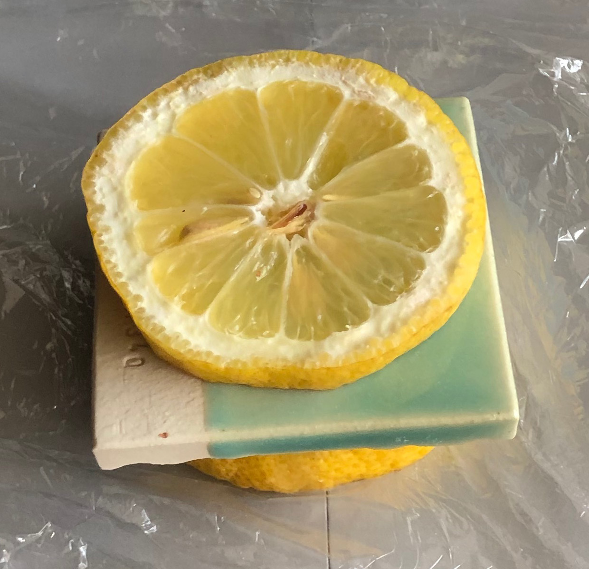

Copper Oxide and Carbonate
With limited exposure copper is considered relatively safe to use. However when added to low lead solubility glazes copper causes the solubility of the lead to be greatly increased. Solubility of glazes of other types can also be increased by the presence of copper.
OSHA does not consider copper exposure in the workplace to be a significant problem. At worst, they state that copper is an irritant especially airborne.
Copper has a TLV (threshold limit value) of 1.0 milligrams per cubic meter of air breathed. By comparison iron oxide is considered a safe-to-use material at 5.0, kaolin is 2.0, barium carbonate is 0.5, quartz is 0.1-0.05.
Copper is not as toxic by ingestion as many of the other metals (it is not a heavy metal). The standard for water is 1.3 mg/L based more on its effects on taste than toxicity (cadmium is 0.005 mg/L).
Volatile copper given off during certain firing techniques can cause copper metal fume fever. If the exposure is limited, this is a temporary condition that goes away by itself.
People suffering from Wilson039;s Disease must be very careful of copper intake because their bodies cannot excrete it, thus it can build up to dangerous levels. Zinc and vitamin C cause the body to excrete copper and taking megadoses of these products could result in copper deficiency.
Copper has several roles in the body one of which is to keep the connective tissues intact. Copper plays an essential role in the production of elastin which is what keeps our skin soft and supple and wrinkle free. Estrogen increases the amount of copper your body can absorb. The US RDA for copper is 3mg (although figures vary quite a bit). For someone with depleted copper, a daily dosage of 10 mg for a period of one month is not considered unsafe. Copper deficiency can increase LDL cholesterol and decrease HDL. It also has an effect on glucose levels. It is believed that some 90 percent of Americans are copper deficient.
| By Tony Hansen Follow me on        |  |
Related Information
Copper does not necessarily cause glazes to leach if used in moderate amounts

This picture has its own page with more detail, click here to see it.
These are four cone 6 glazes of diverse chemistry. They have varying melt fluidities. They are soaked (halfway up) in lemon juice overnight. None show any evidence of surface changes. All contain 2% copper carbonate. If the copper was increased, especially to the point of going metallic or crystallizing, the leaching test would produce different results (especially on the ones that are running, they lack SiO2 and Al2O3). So, if you use copper sensibly (in moderate amounts), there is a good chance of making a glaze that resists leaching.
Lemon leaching test on a copper-containing glaze

This picture has its own page with more detail, click here to see it.
This was left for 24 hours. Wrapped in stretch wrap. Then the surface of the glaze was inspected under a lamp to detect any differences between the lemoned and non-lemoned surfaces. Lemons are highly acidic. This glaze passed because the base recipe, G3806N, was methodically developed so that it has plenty of Al2O3 and SiO2 (in the fired chemistry) to build a stable glass.
Black ash glaze for 20% raw metal pigments: Suitable for functional ware?

This picture has its own page with more detail, click here to see it.
This glaze is 49% Wood Ash, 24% Soda Feldspar and 27% Ball Clay. 10 copper carbonate and 10 manganese dioxide are added to that. This beautiful sculpture was made by Dan Ingersoll, aesthetically this glaze is perfect for it. But there are two red flags here. Significant manganese and copper metal fumes are certain to be generated at cone 10 (they are seriously not healthy) so anyone using this must be very careful. But there is something much more serious - this glaze is being used on functional ware. Copper is well known to destabilize other metals in the fired glass. This 10:10 combination is a perfect storm for leaching heavy metal into food and drink. This is not an argument for the use of commercial glazes, it is one for common sense application of the concept of limit recipes.
Links
| Materials |
Copper Oxide Red
|
| Materials |
Copper Carbonate Basic
This form of copper carbonate is the article of commerce, a mixture of theoretical copper carbonate and copper hydroxide. |
| Materials |
Copper Carbonate
A source of CuO copper oxide used in ceramic glazes to produce a variety of colors (used only or with other colorants). |
| Materials |
Copper Oxide Black
The purest source of CuO copper oxide pigment used in ceramic glazes. |
| Hazards |
Copper Compounds Toxicology
|
| Articles |
Are Your Glazes Food Safe or are They Leachable?
Many potters do not think about leaching, but times are changing. What is the chemistry of stability? There are simple ways to check for leaching, and fix crazing. |
| Glossary |
Leaching
Ceramic glazes can leach heavy metals into food and drink. This subject is not complex, there are many things anyone can do to deal with this issue |
 PayPal | No tracking, No ads, No paywall, No transient content! Just organized, concise information constantly updated and improved. Was this helpful? Consider supporting me. |
Got a Question?
Buy me a coffee and we can talk 

https://digitalfire.com, All Rights Reserved
Privacy Policy